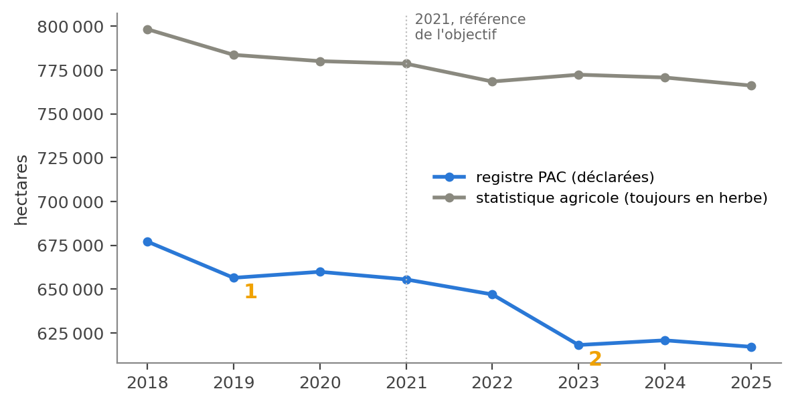
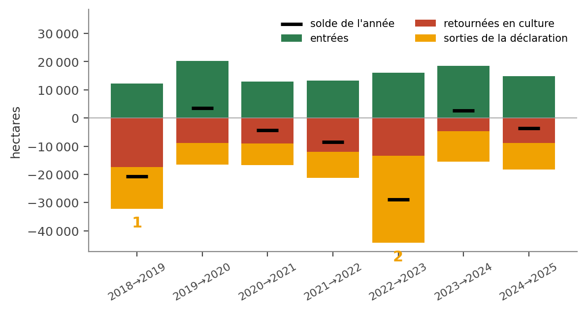
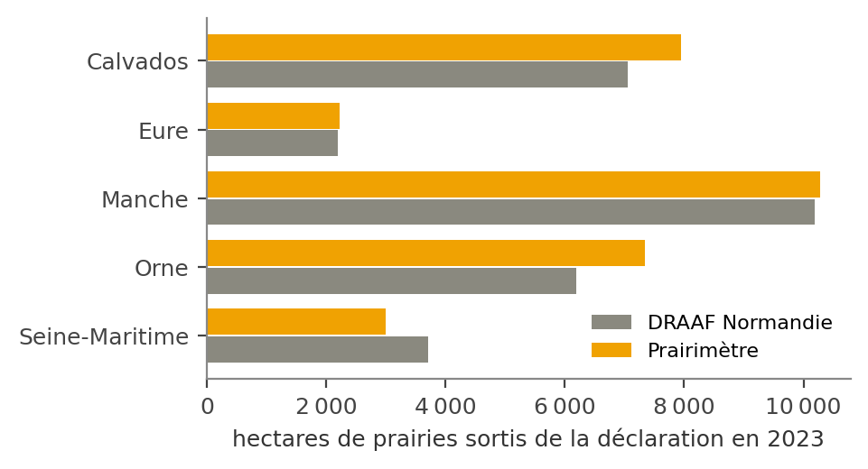
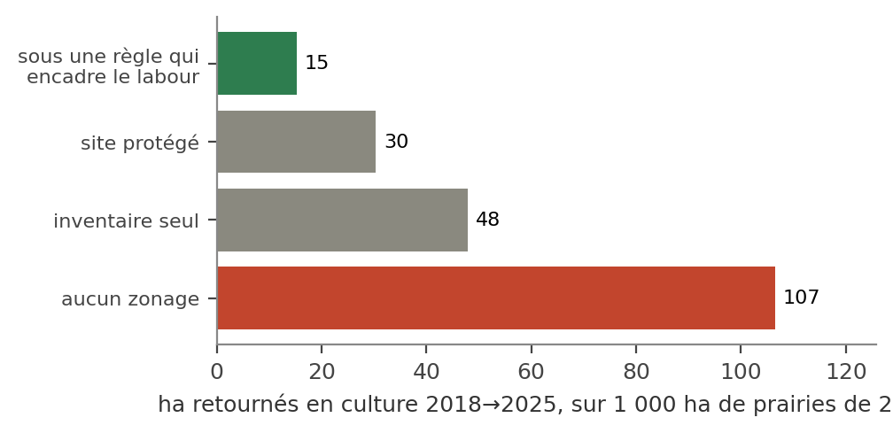
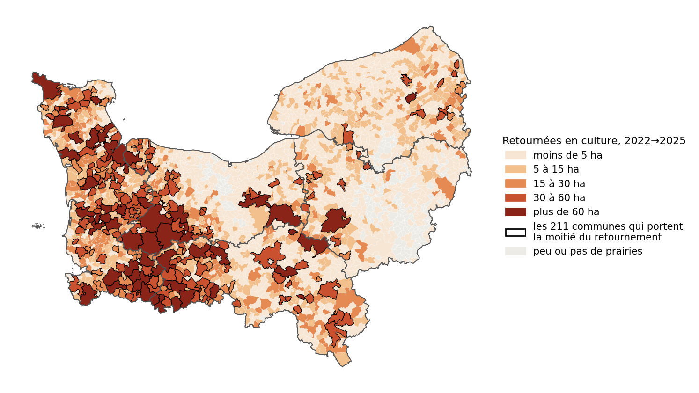
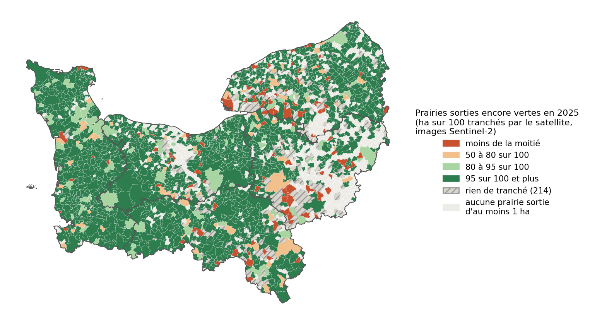
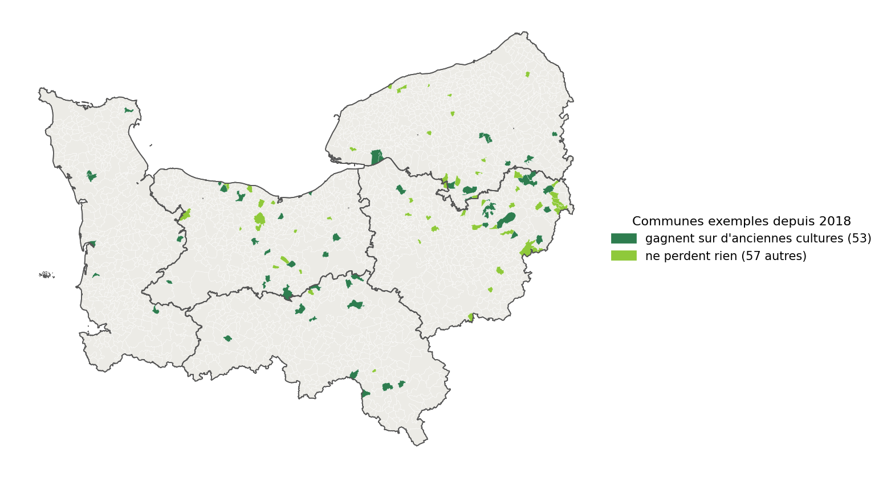
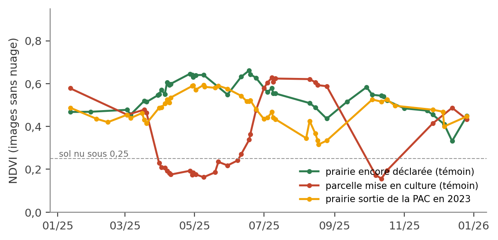
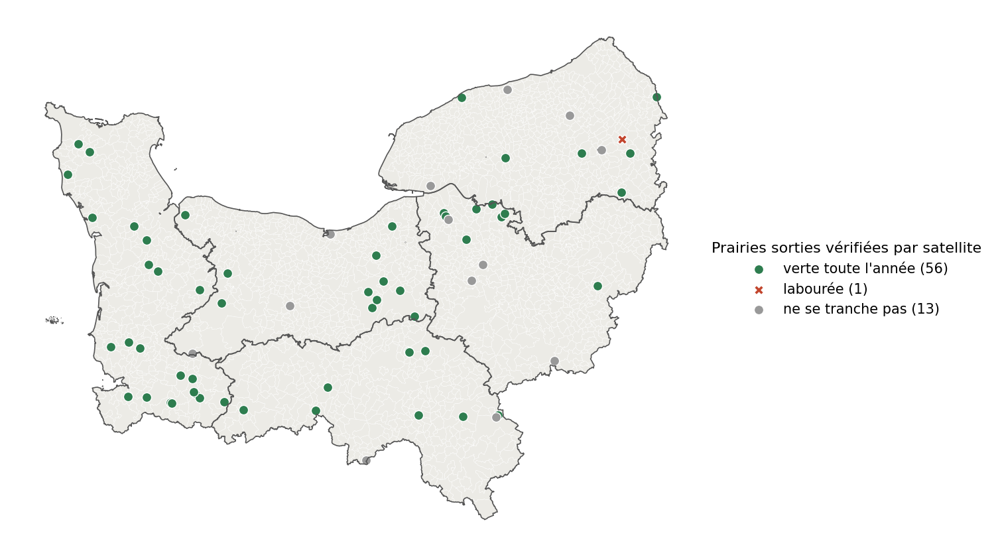
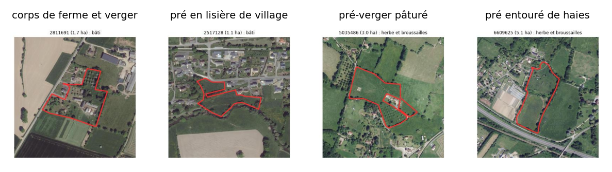

La Normandie est une terre d'herbe : ses prairies permanentes nourrissent l'élevage, retiennent l'eau et le carbone, abritent la biodiversité du bocage. La Région s'est fixé zéro perte nette de prairies permanentes en 2030. Trois questions se posent : combien perd-on vraiment, les règles retiennent-elles les prairies (l'interaction entre l'homme et la nature, sujet 2 du datathon), et où agir ?
Deux sources comptent les prairies, et elles ne disent pas la même chose. Le registre parcellaire de la PAC (RPG, publié chaque année, parcelle par parcelle) perd 38 438 ha depuis 2021. La statistique agricole (Agreste), qui mesure l'objectif officiel, n'en perd que 12 468 ha jusqu'en 2025 (chiffre provisoire). Comprendre cet écart est la première clé ; le Prairimètre l'explique et le vérifie par satellite.
L'objectif n'est pas tenu. Mesurée dans les séries d'Agreste, la part de l'herbe dans la surface agricole recule de 37,7 % en 2021 à 37,2 % en 2025. La cible de 39 % avait été fixée sur les chiffres 2019 publiés en 2020 ; Agreste a depuis révisé ses séries pour les mettre en cohérence avec le recensement agricole 2020, et 2019 y vaut 37,9 %. Il faut donc comparer les années dans la même série, ce que fait le Prairimètre.

Le registre est comparé à lui-même, parcelle par parcelle, d'une année sur l'autre. Entre 2018 et 2025, le solde est de −60 050 ha, à 347 ha du chiffre officiel de la PAC (−59 703 ha, arrêté du 11 septembre 2026, JORF n° 0218 du 18 septembre 2026). Les prairies disparaissent de deux façons : 54 815 ha retournées en culture, une perte certaine, et 55 539 ha sorties de la déclaration, dont le registre ne dit rien.

30 796 ha de prairies sortent de la déclaration en un an, 3,3 fois une année ordinaire, à 94 ha sur 100 en parcelles entières. C'est l'effet de la nouvelle PAC, qui réserve les aides aux « agriculteurs actifs » : après 67 ans, un exploitant qui touche sa retraite n'y a plus droit. La DRAAF compte 5 391 exploitations sorties (−19 % de déclarants), dont près de 60 sur 100 ont un chef de 67 ans ou plus, et plus de 29 000 ha de prairies permanentes sorties (DRAAF Normandie, Agreste Conjoncture n° 55, décembre 2024, p. 4 (données ASP)). Le Prairimètre retrouve ces chiffres département par département. La même année, la statistique agricole voit les prairies augmenter (+3 903 ha).

Vu du satellite. Sur 40 de ces prairies tirées au hasard, 35 ont pu être tranchées : les 35 restent vertes toute l'année 2025, sans labour (au moins 90 sur 100 avec une confiance de 95 %). Ces sorties sont surtout administratives.
Corrigé par le satellite, le registre ne perd plus 38 438 ha mais entre 14 910 ha et 20 984 ha depuis 2021, plus proche de la statistique agricole.
17 424 ha retournés en culture, 2,0 fois une année ordinaire, l'année où retourner une prairie ne demande plus d'autorisation en Normandie (Arrêté du 13 novembre 2018, cité dans la réponse du ministère à la question écrite n° 08515 (Sénat, 2019)) : un lien très probable, pas démontré. La statistique agricole voit elle aussi une baisse cette année-là (−14 617 ha) : la perte est réelle. La même année, 66 ha sur 100 des surfaces sorties de la déclaration y reviennent ensuite, contre 32 d'habitude : le registre publié en 2019 était incomplet, surtout dans l'Orne et la Seine-Maritime, et les prairies reviennent intactes en 2020. C'est un manque du fichier publié, pas un changement dans les champs. Explication probable, non confirmée par un document : le registre publié est l'état connu au 1er janvier suivant (IGN), sans les dossiers pas encore instruits. La comparaison directe 2018→2025 n'en dépend pas.
Le ratio de la PAC compare la part des prairies dans la surface agricole à 2018. En 2023, il recule de 6,45 % (référence 34,93 %) : autorisation préalable pour retourner une prairie, et obligation de réimplanter les prairies retournées (Arrêté du 31 octobre 2023, JORF n° 0254 du 1er novembre 2023). En 2024, il recule de 1,21 % (référence 32,94 %) : aucune obligation (Arrêté du 3 décembre 2024, JORF n° 0287 du 5 décembre 2024 (référence 2018 « retraitée », règlement délégué (UE) 2024/1235)). En septembre 2026, le recul n'est plus que de 1,97 %. La référence a été recalculée : l'alarme s'est tue alors que les prairies continuent de reculer. L'objectif se suit donc en hectares, avec la statistique agricole, et le Prairimètre dit où.
On compare, dans une même commune, les prairies couvertes par une règle qui encadre le labour (prairies sensibles BCAE 9, zones humides BCAE 2, programme nitrates) et les autres. Là où une règle s'applique, on retourne environ 5 fois moins (de 4,2 à 5,7 fois selon la période). Mais ces règles ne couvrent que 14 ha de prairies sur 100, et 86 ha de retournement sur 100 se font hors de tout zonage. Au-dessus des captages d'eau potable, où aucune règle nationale ne s'applique, on retourne autant qu'à côté (rapport de 0,91 à 1,13).

La règle agit-elle par elle-même, ou parce qu'elle porte sur des terrains peu labourés ? Les deux. Sans aucune règle, les prairies d'inventaire (ZNIEFF, zones humides) sont déjà 2,8 fois moins retournées : le terrain compte. Mais à terrain égal, l'interdiction de retourner agit en plus : dans les sites Natura 2000, les prairies sensibles (BCAE 9) sont 7 fois moins retournées que les autres prairies du site ; dans les zones humides, 13 fois moins.
La BCAE 2 (zones humides, depuis 2025, un labour au plus en 4 ans) porte sur des prairies déjà très peu retournées avant (1,0 pour mille par an, contre 17 ailleurs) : pas d'effet visible la première année. Le projet n'a aucune donnée sur les paiements.
Le retournement est concentré : 211 communes portent la moitié du retournement récent (2022→2025). C'est la liste courte où étendre ce qui marche.

Les sorties de la déclaration se concentrent aussi : 237 communes en portent la moitié. La question pour elles : l'herbe est-elle encore là ? Le satellite y répond.
Dans toute la Normandie, chaque prairie de 2018 d'au moins 1 ha sortie de la déclaration en 2025 est mesurée une à une sur les images 2025 : 12 161 parcelles, 40 163 ha (toutes). 76 ha sur 100 restent verts toute l'année (30 667 ha), 3 ont été labourés (1 330 ha) ; les 21 autres ne se tranchent pas (signal entre prairie et labour) ou sont bâtis (58 ha). La carte le dit commune par commune.

Enfin, 53 communes gagnent des prairies sur d'anciennes cultures (863 ha) et 62 n'en ont perdu aucune : des exemples à faire connaître.

Données ouvertes, sans compte. Les images Sentinel-2 (programme Copernicus de l'Union européenne, 10 m, une image tous les 5 jours) sont lues sur le contour de chaque parcelle grâce au catalogue public de Microsoft Planetary Computer. Pour chaque image sans nuage de 2025, on mesure le NDVI, un indice de végétation : une prairie reste verte toute l'année, une parcelle labourée passe par le sol nu.

Une règle testée honnêtement. Une première règle, fixée à l'avance, a échoué : elle voyait labourées 11 prairies sur 20 encore déclarées, piégée par des images isolées. Corrigée sur 40 parcelles dont le registre donne la réponse, la règle a été validée sur 40 autres, jamais regardées : 2 erreurs sur 29 parcelles tranchées (11 indéterminées).

Herbe ou friche ? Selon la carte d'occupation du sol 2023 d'Impact Observatory, les 35 prairies sorties restées vertes sont : 27 végétation basse entretenue, 6 herbe et broussailles, 2 bâti ; aucune n'est boisée. Les 8 cas douteux, regardés sur la photo aérienne de l'IGN, sont des prés (pâtures, prés-vergers, prés à chevaux), dont un en partie corps de ferme (lecture faite par l'assistant IA, à confirmer par l'équipe).

verification/sentinel2/preuves.md.Pour qui. La Région suit son objectif avec la bonne mesure et sait pourquoi le registre PAC exagère la perte. La chambre d'agriculture, les DDT(M) et les intercommunalités disposent d'une liste courte de 211 communes où le retournement se concentre, et de 53 communes exemples à faire connaître. Les agents qui allaient vérifier sur le terrain savent où le satellite a déjà répondu.
Numérique responsable. Uniquement des données ouvertes, sans compte. L'application tourne en local,
sans serveur. Les calculs lourds se font une fois par an, au nouveau registre, puis sont mis en cache. Pour le
satellite, seules les statistiques de chaque parcelle transitent, pas les images elles-mêmes (des
gigaoctets) : c'est le service public de catalogue qui calcule ; toutes les mesures des
150 parcelles de l'échantillon tiennent dans 851 ko. Le moteur trace son propre coût (sorties/sobriete.csv) : « calculer » 25 s, « evaluer » 11 s, pour 6,5 Go de données.
Changement d'échelle. Le moteur ne dépend de la Normandie que par trois réglages (code de la région dans les archives IGN, départements, emprise) et par les textes officiels cités. Le même code peut suivre n'importe quelle région française, chaque année, dès la publication du registre.
Toutes les données sont ouvertes : registre parcellaire graphique 2018-2025 (IGN / ASP), statistique agricole
annuelle (Agreste), zonages (DREAL Normandie, MNHN / PatriNat, MASA, Géoportail de l'urbanisme, Sandre),
OCS GE (IGN), images Sentinel-2 (Copernicus). Une seule méthode : les prairies déclarées une année sont
croisées, parcelle par parcelle, avec les déclarations suivantes. Le moteur se recalcule seul à chaque nouveau
registre (python -m prairimetre mettre-a-jour) ; les tirages au hasard sont reproductibles et
chaque mesure satellite est tracée. Code et application : branche test-app-v1.
Textes officiels : Stratégie régionale pour la biodiversité Normandie 2030, objectif III.5, p. 47 ; Arrêté du 31 octobre 2023, JORF n° 0254 du 1er novembre 2023 ; Arrêté du 3 décembre 2024, JORF n° 0287 du 5 décembre 2024 (référence 2018 « retraitée », règlement délégué (UE) 2024/1235) ; DRAAF Normandie, Agreste Conjoncture n° 55, décembre 2024, p. 4 (données ASP) ; Arrêté du 13 novembre 2018, cité dans la réponse du ministère à la question écrite n° 08515 (Sénat, 2019) ; chiffre officiel : arrêté du 11 septembre 2026, JORF n° 0218 du 18 septembre 2026.